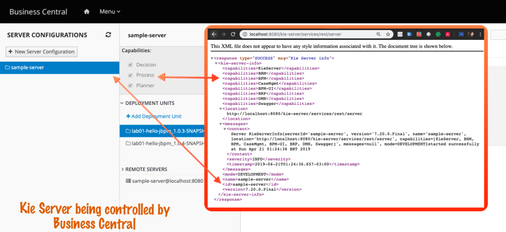
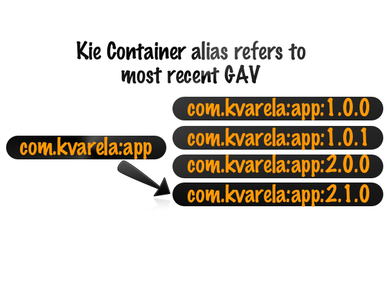

Know Kie Server: let the engine work for you
During the design and development phases of an application, developers and architects should not spare valuable time around implementing a reliant and performant way to process the business rules and flows. How to scale and guarantee the proper execution of more than a hundred thousand rules? How to properly design an engine that consistently handles the lifecycle of long-term running processes, the lifecycle of tasks which requires human interaction, and asynchronous clustered job executions?
Why and How to use Kie Server
Intelligent Kie Server engine addresses these questions and saves your team’s time. Kie Server is a Java-based engine designed to effectively execute business assets. This cloud-native engine can be integrated and consumed by any external services via REST or JMS protocols.
In a business rules scope (drools), it can load a large rule base (more than a hundred thousand rules) into the kbase and the execution is really fast and performant. It also has the capability of updating business rules with zero downtime.
When working with workflows, the engine can run in a standalone or clustered environment and deals with synchronous and asynchronous tasks. It handles short and long-term process or cases execution and persists the state of each step including human tasks lifecycle management. The execution engine also allows advanced queries to be created for custom applications or dashboards.
In the application design phase, besides defining if the Kie Server will be monitored by a BC or if it will be a headless server, the architect may also define whether the Kie Server will run in embedded mode or in a remote server.
Accessing Kie Server
Let’s start by using the REST API in this first Kie Server. Make sure your jBPM is up and running before starting and preferentially check if you deployed the project lab01-hello-jbpm.
You can check if your Kie Server is up and running by accessing it your browser via the URL: http://localhost:8080/kie-server/services/rest/server .
 | The server requires a valid user and password containing the roles “kie-server” and “rest-all“. You can use the user wbadmin and password wbadmin. |
If your Kie Server is properly up and running, the browser output should be an XML. This XML structure shows some information around this Kie Server instance. It has all the capabilities currently enabled and can process all types of business assets. The timestamp of its start is also displayed along with its version, name, and id.
Accessing the BC execution servers page will allow you to confirm that the kie server you are currently accessing is the same that your BC is controlling.

A complete API specification documentation is available for users to check all the possible actions that can be triggered on the engine and how to do it. Access http:// localhost:8080/kie-server/docs and navigate through the page to see all the possible actions.Using Swagger
Swagger UI facilitates the execution of the described APIs and even provides a command line version of the request using the cURL tool. The same request can be made using curl or any other REST tools like Postman.
- Locate “Kie Server and Kie Containers” section, and then, click on the option “/server/containers Returns a list of KIE containers on the KIE Server“.
- Click on “Try it Out” and notice that the page will enable the optional parameters for edition. Don’t fill any of the inputs, click on “Execute” blue button.
- Right below the “Execute” button, the curl command will be displayed. The interface also shows the result “HTTP 200” along with the container list obtained directly from this Kie Server. The request created automatically by swagger uses curl, and it should be looking similar to:
curl -X GET "http://localhost:8080/kie-server/services/rest/server/containers" -H "accept: application/json"
Observe the JSON result of all the deployed containers in the Kie Server. Information like the container id like “lab01-hello-jbpm_1.0.4-SNAPSHOT“, or the container alias like “lab01-hello-jbpm” are displayed along with each container status. These same containers are displayed in BC execution servers page, as “Deployment Units“.
Using command line tools
Client URL, a.k.a. curl, is a command-line tool that can be used to try out the REST API requests along with the jBPM Getting Started series examples. You can also use it to request Kie Server REST APIs.
Open your terminal and execute the curl command to request a list of containers. If an Unauthorized error is received, make sure you set the headers with proper user. Try it like this:
curl --user wbadmin:wbadmin -X GET "http://localhost:8080/kie-server/services/rest/server/containers" -H "accept: application/json"
| Whichever tool you choose to use to consume the REST API, should be fine. Just remember to set the authentication headers and the header “accept” with value “application/json”, to simplify visualization of the results. |
Take some time to visualize the metadata retrieved for the available Kie Containers deployed in this Kie Server.
Interacting with a business project
Try to identify in the API specification documentation, what request should be made in order to start a new process instance of a particular process.
| It is important for the development team to get used to the Kie REST API. Create the habit to check the API docs to identify the necessary request and all available parameters and options to increase the chances of delivering the best integration possible. It is important to put in contrast that, when using Kogito, the REST API is domain driven. Details can be found on Kogito docs. |
In this examples, the curl tool will be used since it clearly displays in a simple way all the necessary headers and parameters. The usage of curl is optional, feel free to use whichever tool you prefer.
Besides using a valid user, starting the execution of a new process instance based on a process definition, requires informing to the Kie Server:
- Which Kie Container has the proper deployment? Inform the ID or alias.
- Which Process Definition should be used? Inform the ID.
- Does the process require information in order to start? Send it via body in JSON or XML format.
Container ID or Container Alias?
Whenever the requested action is going to execute updates of data, the user needs to specify container id in the REST URL. Actions like starting a new process, claiming a task, firing rules and uploading case documents will need the contained id parameters. More general actions like querying all a respective process instance or all the tasks owned by a user do not require the container id parameter.
It is correct to relate the concept of a kie container to a respective deployment version. The container id is composed of the project maven GAV, in the following format group:artifactId:version. To know the GAV of your project checks the pom.xml file.
Considering a project GAV which is com.myspace:lab01-hello-jbpm:1.0.3-SNAPSHOT , a deployment of this project in the Kie Server results in a Kie Container with id com.myspace:lab01-hello-jbpm:1.0.3-SNAPSHOT.

The Kie Container has some metadata information as you could see in the previous lab. One of these deployment’s metadata is the container alias. When a URL with the container alias is consumed, Kie Server will always route the request to the most recent version of the available containers that match this container alias.
| The GAV present in the URL reflects changes whenever the project version changes. The URL used on client applications for the request should always be adapted to the proper version. To facilitate this for those teams who always want to use the most recent version, instead of using the container id (project GAV), it is also possible to use the container alias. |
In business central post, we have deployed in our monitored Kie Server, a Kie Container with the project 01-customer-service-jbpm.
Kie REST API: Start an instance using Kie REST API
On the previous post, we started a new instance of the process was created using Business Central UI and received the input via the business project forms. Now, we will start an instance of the same process, using Kie Server directly via the Kie REST API.
As stated in the docs, the context “/server/containers/{containerId}/processes/{processId}/instances” can be used to create a process instance. Let’s try starting an instance of the Issue Process available in our lab01-hello-jbpm project.
| Kie Server automatically marshalls the JSON string with Issue and Person complex data objects to the defined Data Models. |
The following body input data can be used to start a new process instance.
- Container ID/Alias: 01-customer-service-jbpm
- Process Definition ID: IssuesProcess
- Headers:
- accept: application/json
- content-type: application/json
- Body: The issue, is a process variable of complex type (POJO) Issue. The issue has a question, a type, and a reporter which is also a complex object with type Person. The person, is sending only the name.
{
"issue":{
"Issue": {
"question": "documentation",
"type": "compliment",
"reporter": {
"Person": {
"name": "Karina Varela"
}}}}}
- Open your favorite API Client, or use cURL. Use the suggested JSON structure above as the body request. Take note of the number retrieved in the response.
curl --user wbadmin:wbadmin -X POST "http://localhost:8080/kie-server/services/rest/server/containers/01-customer-service-jbpm/processes/IssuesProcess/instances" -H "accept: application/json" -H "content-type: application/json" -d "{ "issue":{ "Issue": {"question": "documentation", "type": "compliment", "reporter": {"Person": { "name": "Karina Varela" } } } }}"
The response will be a number, the ID of the created process instance. Using this ID you can retrieve details about this current process instance via rest API or you can check business central management options to check the newly created process instance and the active tasks.
Kie REST API: Retrieving information about a process instance
Try finding in the documentation, how to use a REST API that returns information about a specified process instance. Let’s try it, here are suggested parameters:
- URL: context:services/rest/server/containers/{containerId}/processes/instances/{processInstanceId}?withVars=true
| The withVars parameter will ask the engine to fetch the process variables. The default value is false, and the “process-instance-variables” will be retrieved with null value. |
- container id: 01-customer-service-jbpm
- process instance id: Use the ID of the process you just created.
- Do a GET request to retrieve details on the process instance. This example uses a process instance id 5.
curl –user wbadmin:wbadmin -X GET “http://localhost:8080/kie-server/services/rest/server/containers/01-customer-service-jbpm/processes/instances/5” -H “accept: application/json”
Use some time to observe the information present in the JSON result. Besides other important information, these are highlighted:
- process-instance-id: process instance ID which was queried.
- process-state: current process state, 1 means “Active”
- container-id: Kie Container which related to this process execution. With this, itis possible to know the respective project version used when the process was created.
- initiator: username from the user who started this process instance;
- active-user-tasks: list of user tasks in an active state (waiting for humaninteraction);
- process-instance-variables: the variables from this process execution. Notice the Issue now has a solution that was automatically defined by the project business rules.
Kie REST API: Retrieve diagram from running process instances
Let’s check graphically how this process is going by. Open a new tab in your browser and access this URL. Change the {processInstanceId} per the new process instance id you created.
This request retrieves an SVG from the process instance id, showing in a graphical manner the ongoing status of this process. This can, for example, be used within custom client applications.
Kie REST API: Aborting a process
During development, we may reach unexpected scenarios where we may need to abort running process instances, even in production environments. Try to identify in the API documentation, how to abort a running process instance.
Using your API client, send a DELETE request to the following context: /server/containers/{containerId}/processes/instances?instanceId={processInstanceId}
| You can abort as many instances as needed, by adding more instanceId parameters. Example: /server/containers/{containerId}/processes/instances?inst anceId=1&instanceId=2&instanceId=3 |
See the example below using curl and aborting process instance 24:
curl --user wbadmin:wbadmin -X DELETE "http://localhost:8080/kie-server/services/rest/server/containers/01-customer-service-jbpm/processes/instances?instanceId=24" -H "accept: application/json"
No output is expected on the return of this execution. Query the instance again to confirm the abort action (the below code queries id 24):
curl --user wbadmin:wbadmin -X GET "http://localhost:8080/kie-server/services/rest/server/containers/01-customer-service-jbpm/processes/instances/24" -H "accept: application/json"
The result shows that the “process-instance-state”, is now 3, which means aborted.
This blog post is part of the third section of the jBPM Getting started series: Automate your business with jBPM